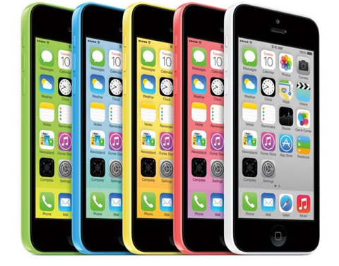

Apple's iPhone 5c isn't the low-cost phone you've been
waiting for

The iPhone 5c,simply put, is for those who've grown numb to Apple's largely evolutionary
takes on its primary iPhone range. It'll attract a younger audience that cares less about finely
beveled edges and more about playing Connect 4 on their iPhone case . It'll cater to the same
crowd that has looked longingly towards the $599 (again, off-contract) Moto X -- a phone for the
mainstream, and a phone that's as colorful as one's soul. In a way, this is the anti-Moto X. From a
price, spec and feature perspective, it's a match that's too close to call. The iPhone 5c's camera
has an edge on the Moto X, but the X's Active Display is a boon for notifications. As these things
tend to go, a lot of it boils down to ecosystem preference. The iPhone 5c is being built for the
same audience as the flashy iPod nano, and moreover, Apple built it for those on Wall Street
who feel that it simply must attract new markets to stay atop its game.
Apple never showed intentions of racing the Nexus 7 to the bottom in the tablet game, and the
iPhone 5c is proof that it won't do that in the phone arena, either.
Infographic by Troy Dunham for Engadget
Kebudayaan Indonesia yang multikultur seperti itu, ketika dikaji dari sisi dimensi waktu, dapat
dibagi pula pengertiannya :
1. Pertama, kebudayaan (Indonesia) adalah kebudayaan yang sudah terbentuk.
2. Kedua, kebudayaan (Indonesia) adalah kebudayaan yang sedang membentuk.
3. Ketiga, adalah kebudayaan (Indonesia) adalah kebudayaan yang direncanakan untuk
dibentuk
Adapun Pengaruh Positif dapat berupa :
Peningkatan dalam bidang:
1. sistem teknologi,
2. Ilmu Pengetahuan, dan
3. ekonomi.
Terjadinya pergeseran struktur kekuasaan dari otokrasi menjadi oligarki.
Mempercepat terwujudnya pemerintahan yang demokratis dan masyarakat madani